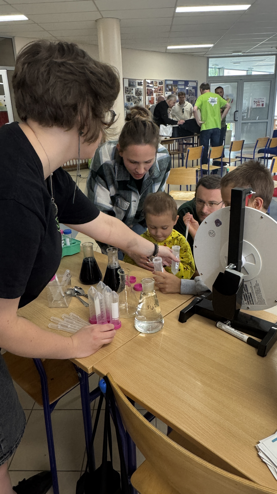
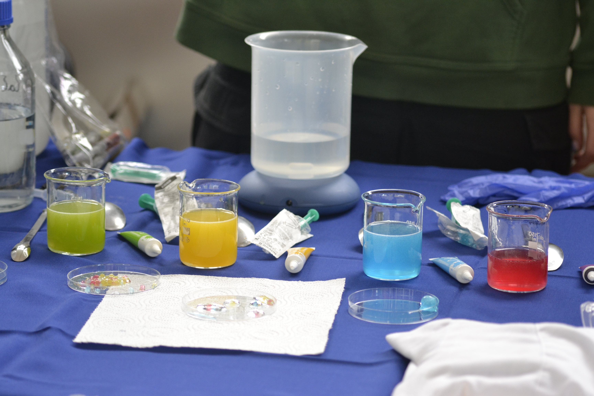
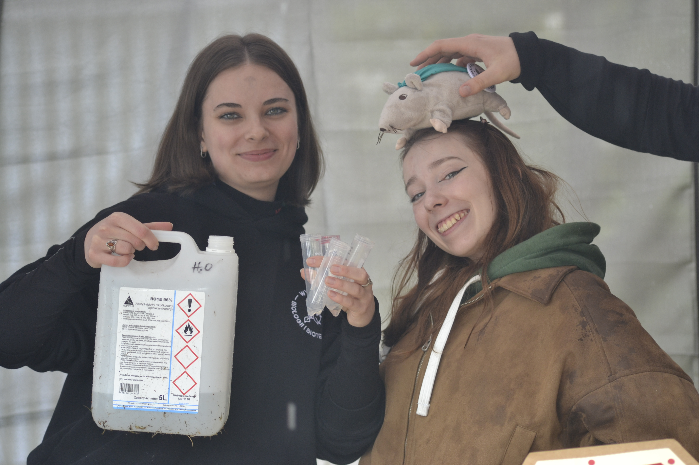
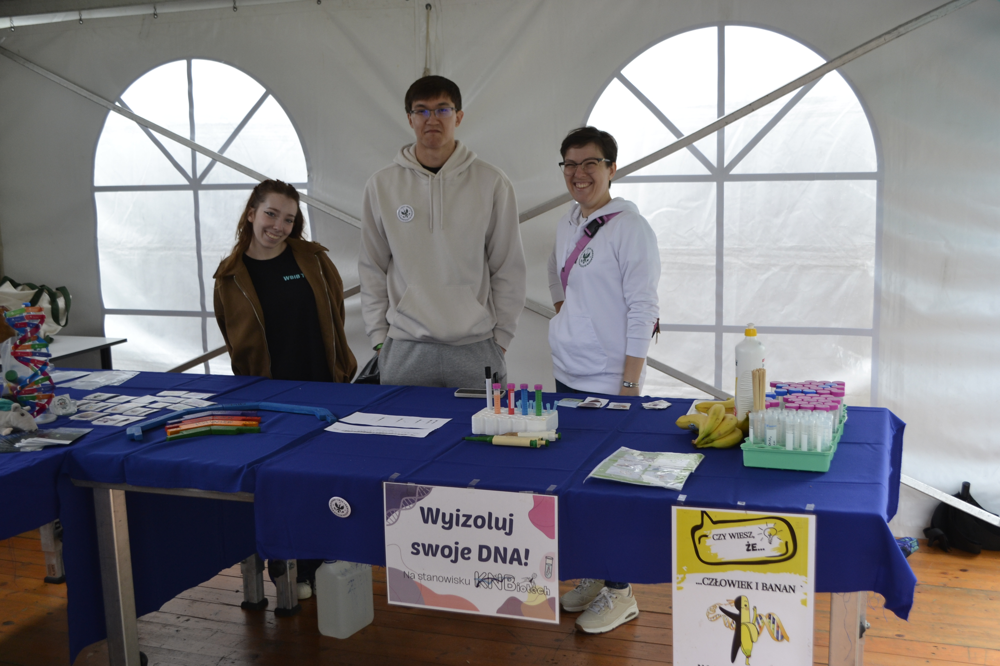
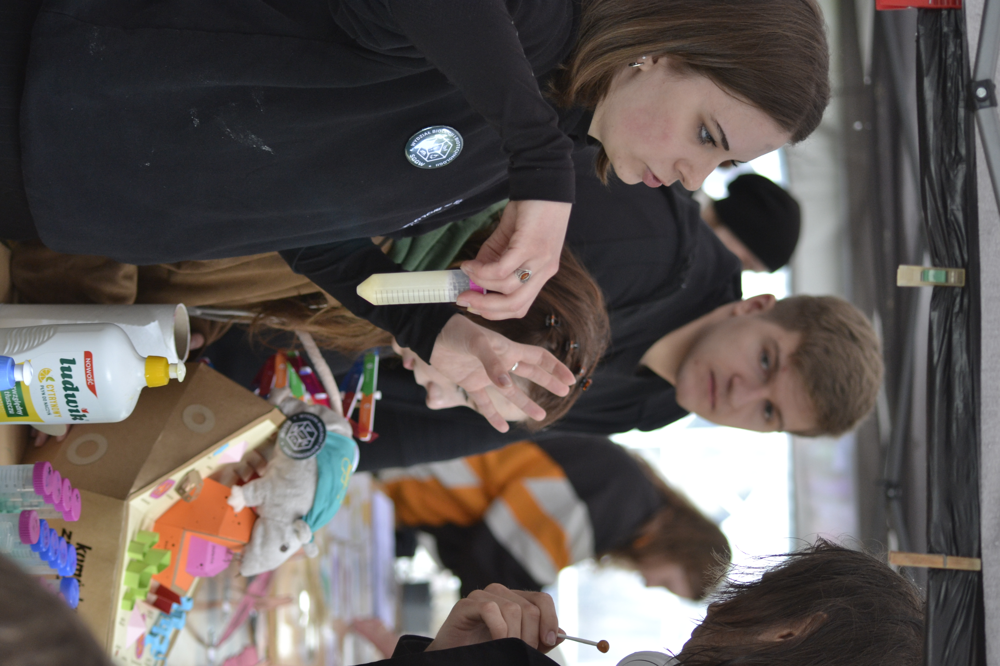

Mikrobiologia
Drugie życie fusów z kawy: przygotowanie podłoża do hodowli mikroorganizmów.
Projekt dotyczy wykorzystania fusów z kawy jako podłoża do hodowli grzybów oraz pożytecznych mikroorganizmów...
Szczegóły projektu →NAUKA • INNOWACJE • WSPÓŁPRACA
KNBiotech to społeczność studentów zainteresowanych badaniami naukowymi, pracą laboratoryjną i praktycznymi zastosowaniami biotechnologii.
POZNAJ KNBIOTECH
Łączymy studentów zainteresowanych biotechnologią, mikrobiologią, biologią molekularną i naukami pokrewnymi. Organizujemy projekty, warsztaty i wydarzenia naukowe.
Dowiedz się więcej o kole →NASZA PRACA
Mikrobiologia
Projekt dotyczy wykorzystania fusów z kawy jako podłoża do hodowli grzybów oraz pożytecznych mikroorganizmów...
Szczegóły projektu →Biotechnologia żywności.
Badania dotyczą jadalnych powłok pektynowych wzbogaconych γ-dekalaktonem, które mogą ograniczać wzrost pleśni i mikroorganizmów...
Szczegóły projektu →Fitochemia
Projekt analizuje potencjał biochemiczny owoców berberysu, obejmując ekstrakcję substancji bioaktywnych...
Szczegóły projektu →AKTUALNOŚCI

Warsztaty laboratoryjne
Organizacja warsztatów laboratoryjnych dla młodych pasjonatów nauki w szkole podstawowej.
Czytaj więcej →
Warsztaty naukowe na stadionie narodowym
Organizacja warsztatów naukowych dla uczestników wydarzenia edukacyjnego na stadionie narodowym w Warszawie.
Czytaj więcej →KNBIOTECH W OBIEKTYWIE



ZOSTAŃ CZĘŚCIĄ KNBIOTECH
Poznaj zasady członkostwa i dowiedz się, jak dołączyć do naszego zespołu.
Jak dołączyć?